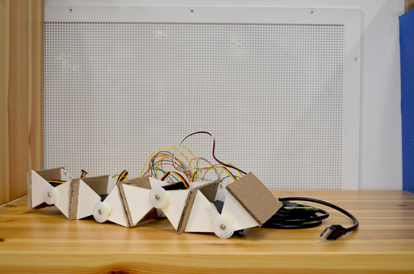
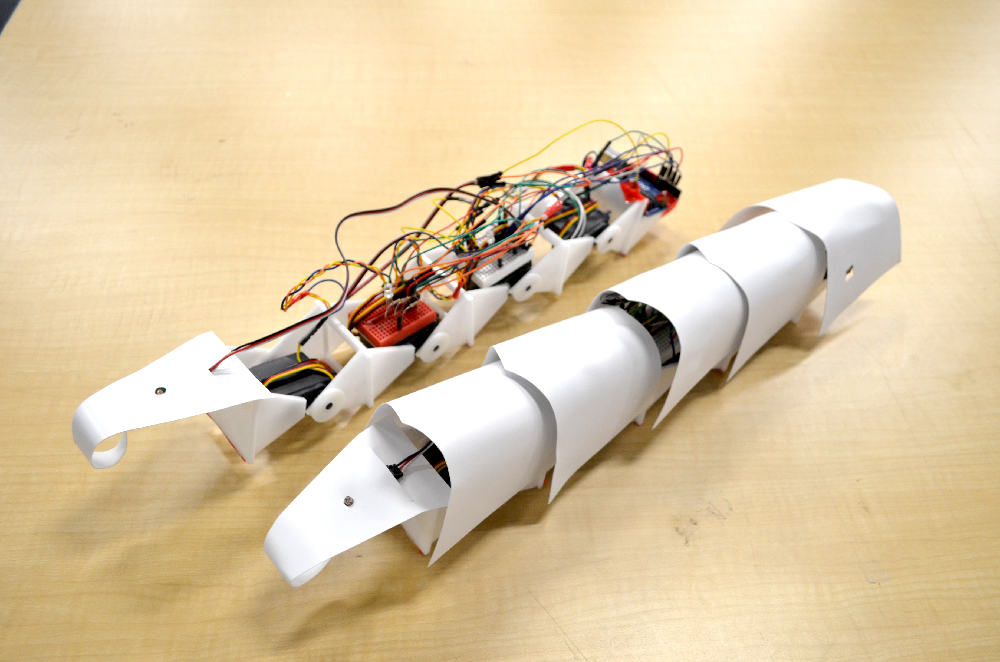

Type
School project
Role
Conceptual Designer
Electrician
Fabricator
Cinematographer
Software


Team
Brendan DeBrincat
Soojin Lee
Yan Yao Li
Objective
Using the precedent study of shape of life, create a product that can help portray light energy use display for household users.
Process
By keeping our goal in mind, the team individually researched about various forms and behaviours shapes of life can offer, as well as light energy usage in typical households. With the information gathered, hand sketches were drawn to capture the best essence of the product to communicate to users about their light energy usage. Next, three stages of prototyping were created from low fidelity to high fidelity, in addition to 3D renderings to test various aesthetics and materials involved to produce a functional pet creature that can alert users. Here, the team has moved forward with my design concept where I guided the members of my design intention and functionalities.
Design Process
Result
I learned that abstraction can be integrated in product design where usability can still be present. In terms of technical skills, I managed to get a good grasp in creating products in a three-dimensional digital world to explain ideas to peers, but due to the law of physics, the outcome of a physical product may have different functionalities because of the constraints which requires further investigation and teamwork.
- 
- 